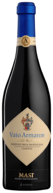
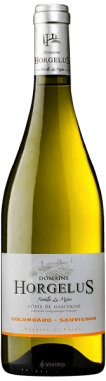

Top Vines

4.4
234 Отзывов

Masi
Serego Alighiery Vaio Armaron
Amarone della Valpolicella
Amarone della Valpolicella, Italy
234 Отзывов
Serego Alighiery Vaio Armaron
Amarone della Valpolicella
Amarone della Valpolicella, Italy

67 Отзывов

Lago Vibrant & Aromatic
Vinho Verde 2016
Vinho Verde, Portugal

4.0
1938 Отзывов

Horgelus
Colomand - Sauvignon Cotes de
Gascogne 2018
Cotes de Gascogne, France
1938 Отзывов
Colomand - Sauvignon Cotes de
Gascogne 2018
Cotes de Gascogne, France